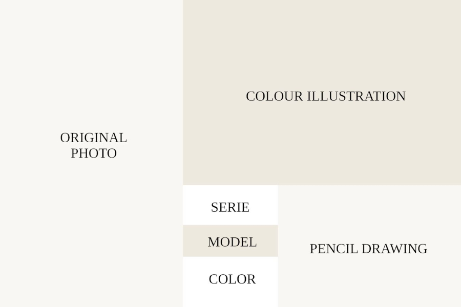

Matchbox Superfast Archive
Personal non-commercial illustration archive focused on
Superfast series.
Each model includes:
original photographed model,
colour illustration,
and pencil drawing documentation.
Original models photographed.
Illustrations created digitally.
← back to archive